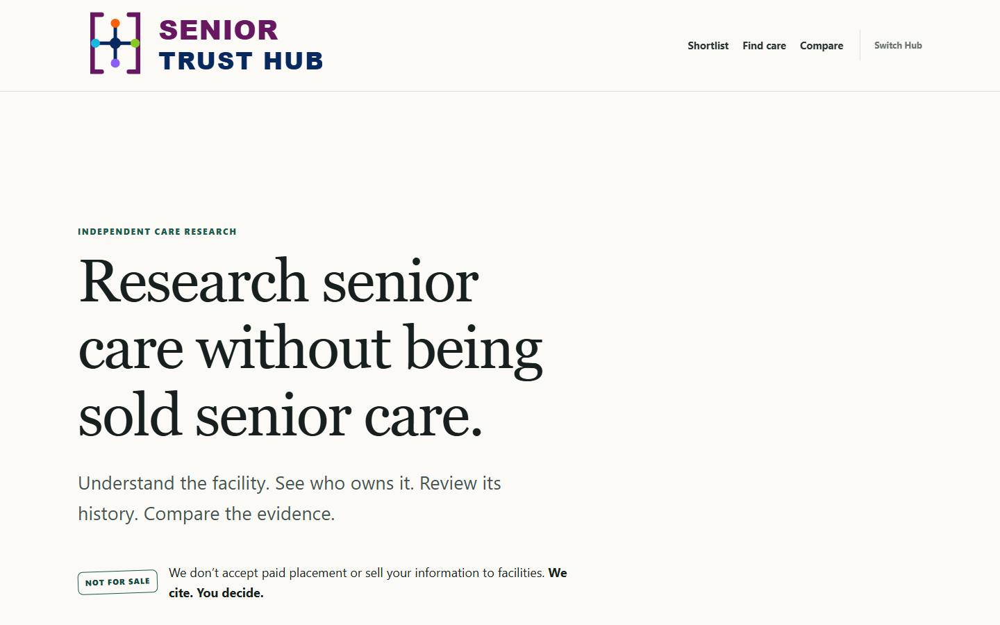
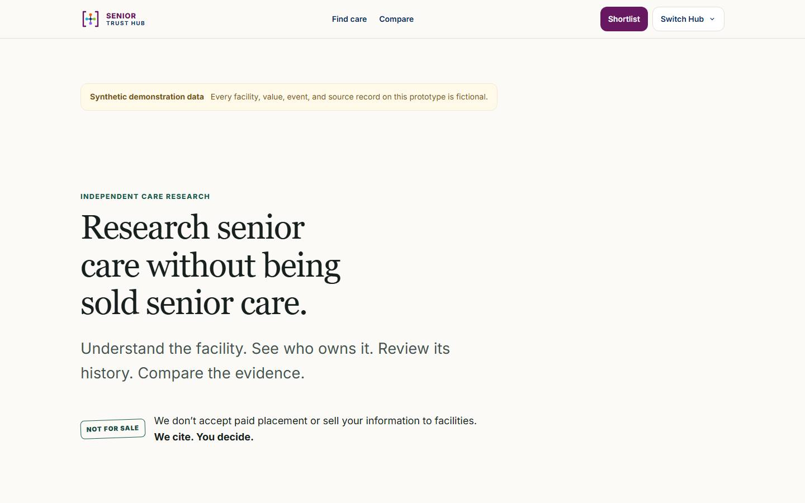
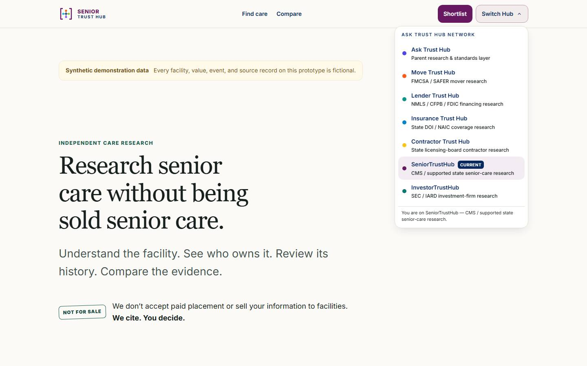

OLD SENIOR vs NEW SENIOR
VISUAL-008 network shell. Oversized padded logo and 132px cream masthead collapse to the frozen 69px chassis. Georgia editorial H1 stays (86px → 60px). Cream, plum, and independence teal remain.
Desktop 1440 — header
OLD — 132px · 352×115 padded logo @ x=112 · text Switch Hub
 NEW — 69px · 36px canonical plum mark @ x=144 · Switch Hub 44×129
NEW — 69px · 36px canonical plum mark @ x=144 · Switch Hub 44×129
Desktop 1440 — homepage

OLD SENIOR · H1 86px Georgia

NEW SENIOR · H1 60px Georgia · cream canvas
Desktop — Network Navigator

NEW — ASK TRUST HUB NETWORK · Senior Current
Mobile 390
OLD — 148px wrapped nav
 NEW — 57px / 30px mark · [logo] [menu]
NEW — 57px / 30px mark · [logo] [menu]